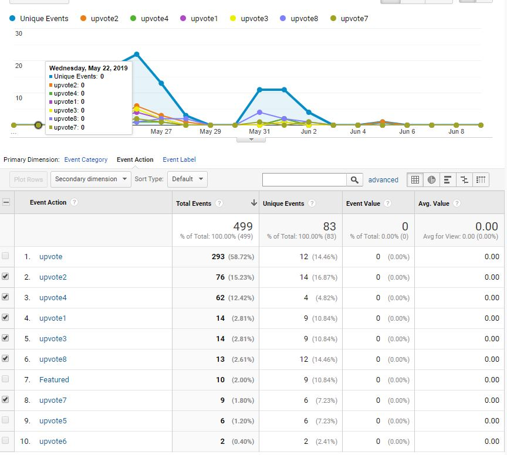

A Summary
Over these last 10 weeks I have delved into Usability, Accessibility, Analytics, and more. The sheer amount I have learned and discussed here has brought the value of these subjects to light for me. Each one will help me become a better developer as I progress down this path.
To wrap things up let’s look at how well I met my testing goals. To restate things once more:
- The goal was for users to rate week 2 with my thumbs up button
- Driving users to that specific page was a secondary goal
- The alternate home page advertised week 2 to push people towards it
In my opinion I was successful. Users made it to week 2 more than any other page including the home page! They also voted on week 2 the most by far with a strong runner up being week 4 which was also one of my favorite articles. The alt home page also drove more users to week 2 than the normal home page as discussed in the week 9 analysis. All of this would infer that I by in large accomplished what I set out to do.
Hindsight is 20/20
All the steps I took helped but I think that the home page change was the most beneficial. While word of mouth worked well for getting people to my site at first it is far more limited than the more subconscious signals from a banner. If I were to do things again I would focus on creating more road signs to direct my userbase as that paid off far better than the other options.
I feel as all of this experimentation has helped me understand why big corporations put so much effort into market research. Being able to see how your users use your site can help identify weak spots or strong features. Accessibility can bring more users to the site and prevent a lawsuit. Analytics allows us to see if things are working as intended and track our progress as we change. This is a lot of data to handle but is non intrusive to any party involved. As long as someone isn’t trying to be malicious with these data sets then everything should be fine.
I hope that by reading through these experiments you have learned just as much as I have. I will try to Implement some of the changes mentioned here before the next entry. Until then keep learning.